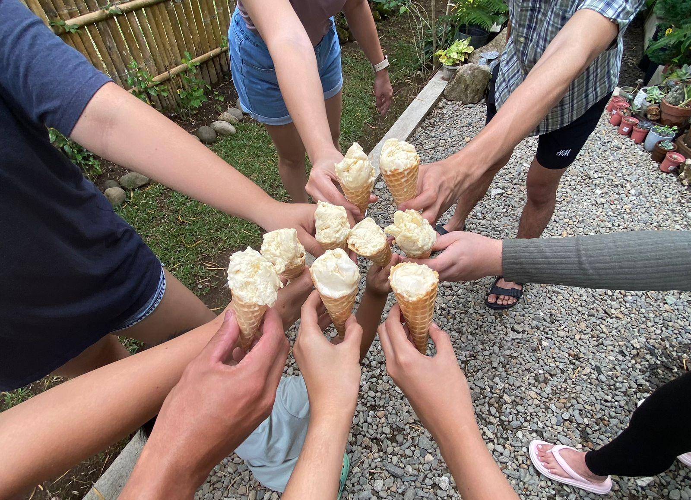
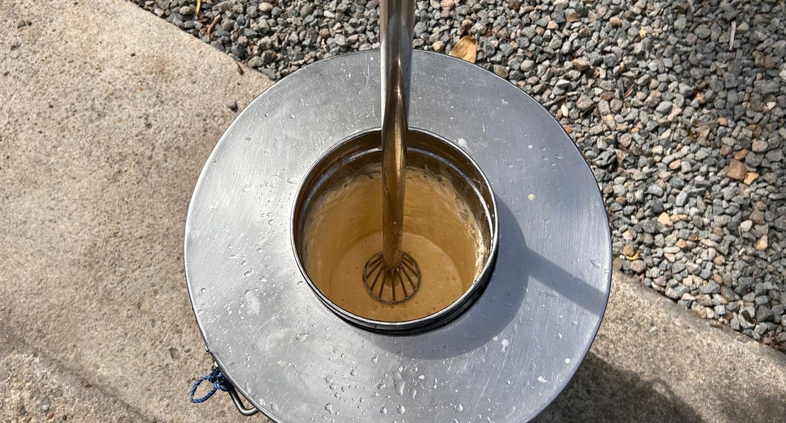

About Rojo's
Our Story

“Rojo’s Fiesta Scoops is a family-owned ice cream business that originated in Silay City, Negros Island. Built around the joy of celebrations, it focuses on serving Filipino “dirty ice cream,” also known as sorbetes, delivered straight to customers’ homes for birthdays and other special occasions.
The business started in 2024 as a small home-based venture with the simple goal of turning a local favorite into something more convenient and accessible. From simple family gatherings to big celebrations, each scoop is prepared with care and a homemade touch that reflects its roots.
Inspired by the festive spirit of Negrense culture, Rojo’s Fiesta Scoops brings the warmth of celebration into every order. It’s ice cream made to be part of every moments to be remembered.”
Our Mission

At Rojo’s Fiesta Scoops, our mission is to bring joy to every home in Silay City through handcrafted ice cream made with care, creativity, and a touch of family tradition. As a home-based, family-owned business, we take pride in creating flavors that feel comforting yet exciting—turning local simple ingredients into delightful treats that everyone can enjoy.
We aim to make every scoop a small celebration, whether it’s for everyday cravings or special moments shared with loved ones. By focusing on quality, warmth, and genuine connection with our community, we strive to create not just ice creams, but lasting memories that keep people coming back for more.